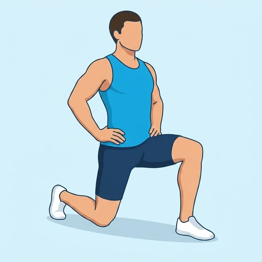

Half-Kneeling Hip Flexor Rock
The dynamic version of the kneeling hip-flexor stretch: from a half-kneeling stance the hips rock forward into the stretch and back out of it, repeated instead of held.
Upper legs · Bodyweight · Beginner


Muscles worked by the Half-Kneeling Hip Flexor Rock
Primary
Secondary
Also called: hip flexor, iliopsoas, psoas, iliacus, hip flexors.
Equipment
No equipment — this is a bodyweight exercise.
How to do the Half-Kneeling Hip Flexor Rock
- Kneel on one knee with the other foot flat on the floor in front of you.
- Tuck the tailbone slightly and brace the trunk so the lower back stays neutral.
- Rock the hips forward until you feel the front of the back thigh lengthen.
- Rock back out of the position under control and repeat rhythmically.
- Switch sides and repeat for the same number of repetitions.
Form tips
- Keep the movement in the hips; if the lower back arches, shorten the range.
- Squeeze the glute of the kneeling leg during the forward rock.
- Pad the down knee with a folded mat if the floor is hard.
At a glance
| Body part | Upper legs |
|---|---|
| Category | Stretching |
| Force type | Dynamic |
| Mechanic | Compound |
| Difficulty | Beginner |
| Equipment | Bodyweight |
| Goals | Mobility |
| Tags | Mobility, Stretching |
| MET | 5.0 (metabolic equivalent, for calorie estimates) |
| Unilateral | Yes |
| Bodyweight | Yes |
| Dataset id | half-kneeling-hip-flexor-rock |
Half-Kneeling Hip Flexor Rock in German & Spanish
| German | Hüftbeuger-Wippen im Halbkniestand |
|---|---|
| Spanish | Balanceo de Flexor de Cadera en Media Rodilla |
Descriptions, instructions and tips ship in all three languages in the JSON.
Related exercises
Exercise data (JSON)
The record below is exactly what exercises.json ships for this exercise — names, descriptions, instructions and tips in English, German and Spanish.
{
"id": "half-kneeling-hip-flexor-rock",
"name_en": "Half-Kneeling Hip Flexor Rock",
"name_de": "Hüftbeuger-Wippen im Halbkniestand",
"name_es": "Balanceo de Flexor de Cadera en Media Rodilla",
"description_en": "The dynamic version of the kneeling hip-flexor stretch: from a half-kneeling stance the hips rock forward into the stretch and back out of it, repeated instead of held.",
"description_de": "Die dynamische Variante der knienden Hüftbeugerdehnung: aus dem Halbkniestand wippt die Hüfte in die Dehnung hinein und wieder heraus, wiederholt statt gehalten.",
"description_es": "La versión dinámica del estiramiento de flexor de cadera de rodillas: desde media rodilla las caderas se balancean hacia el estiramiento y vuelven, repetido en lugar de mantenido.",
"category": "stretching",
"force_type": "dynamic",
"mechanic": "compound",
"difficulty": "beginner",
"body_part": "upper_legs",
"primary_muscles": [
"hip_flexors"
],
"secondary_muscles": [
"gluteus_maximus",
"quadriceps"
],
"goals": [
"mobility"
],
"tags": [
"mobility",
"stretching"
],
"is_unilateral": true,
"is_bodyweight": true,
"instructions_en": [
"Kneel on one knee with the other foot flat on the floor in front of you.",
"Tuck the tailbone slightly and brace the trunk so the lower back stays neutral.",
"Rock the hips forward until you feel the front of the back thigh lengthen.",
"Rock back out of the position under control and repeat rhythmically.",
"Switch sides and repeat for the same number of repetitions."
],
"instructions_de": [
"Knie auf einem Knie, der andere Fuß steht flach vor dir am Boden.",
"Kipp das Steißbein leicht ein und spann den Rumpf an, damit der untere Rücken neutral bleibt.",
"Wipp die Hüfte nach vorn, bis die Vorderseite des hinteren Oberschenkels zieht.",
"Wipp kontrolliert wieder heraus und wiederhole rhythmisch.",
"Wechsle die Seite und wiederhole gleich oft."
],
"instructions_es": [
"Apóyate sobre una rodilla con el otro pie plano en el suelo por delante.",
"Mete ligeramente el coxis y aprieta el tronco para que la zona lumbar quede neutra.",
"Balancea las caderas hacia delante hasta notar el alargamiento en la parte frontal del muslo trasero.",
"Vuelve de forma controlada y repite con ritmo.",
"Cambia de lado y repite el mismo número de veces."
],
"tips_en": [
"Keep the movement in the hips; if the lower back arches, shorten the range.",
"Squeeze the glute of the kneeling leg during the forward rock.",
"Pad the down knee with a folded mat if the floor is hard."
],
"tips_de": [
"Halte die Bewegung in der Hüfte; geht der untere Rücken ins Hohlkreuz, verkürze den Weg.",
"Spann beim Vorwippen die Gesäßmuskulatur des knienden Beins an.",
"Polstere das untere Knie mit einer gefalteten Matte, wenn der Boden hart ist."
],
"tips_es": [
"Mantén el movimiento en las caderas; si la zona lumbar se arquea, acorta el recorrido.",
"Aprieta el glúteo de la pierna arrodillada durante el balanceo hacia delante.",
"Acolcha la rodilla de apoyo con una esterilla doblada si el suelo es duro."
],
"met": 5.0,
"images": {
"flat": {
"start": "images/flat/half-kneeling-hip-flexor-rock-start.webp",
"peak": "images/flat/half-kneeling-hip-flexor-rock-peak.webp"
}
}
}Fetch just this exercise
const { exercises } = await fetch(
"https://exercise-dataset.com/exercises.json"
).then(r => r.json());
const ex = exercises.find(e => e.id === "half-kneeling-hip-flexor-rock");Free for personal and commercial in-app use with attribution (“Exercise data by RepDB”) — see the license and ready-made attribution snippets. Redistributing the data as a dataset or API is not permitted.